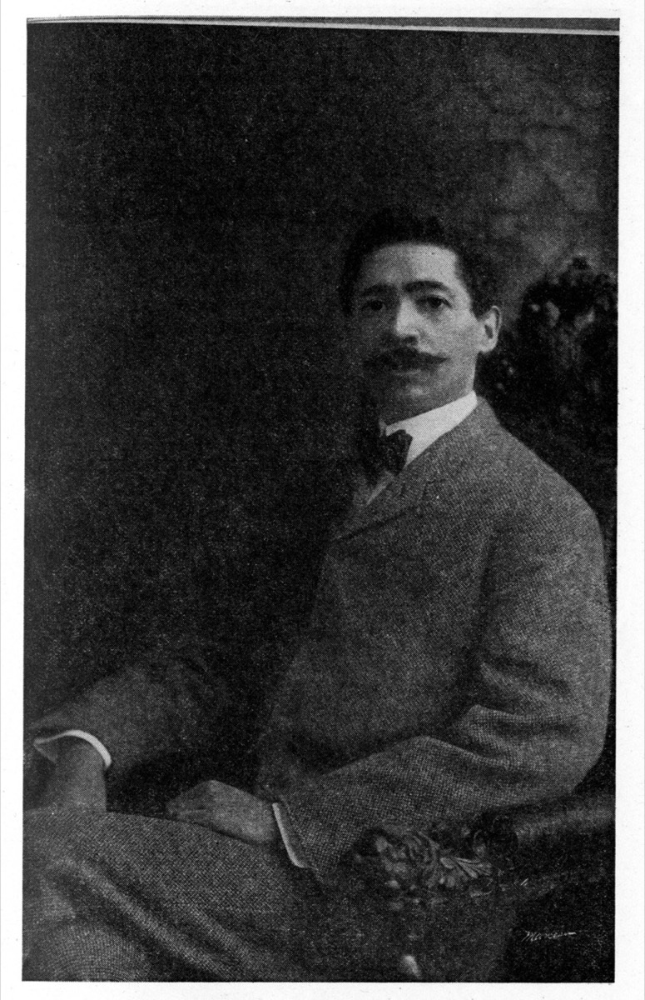

A novel based on a true story · with its own soundtrack
The Life and Times of Abbie Mitchell and Will Marion Cook
Jacques Cook · Antoinette Cook Bush · Penny Daniels
Twelve recordings of Will Marion Cook's music, made between 1900 and 1919 and now public domain, from the Library of Congress and the Internet Archive. Press play, then start the book.
Liner notes
After his father died, Jacques Cook found a large box in the house, stuffed with hundreds of pages of prose. The pages told the story of his grandparents: two Black artists, one generation out of slavery, who reached the heights of American music while Jim Crow tried to stop them at every turn.
In the summer of 1898, a fourteen-year-old soprano climbed to the roof of the Casino Theatre to audition for the most arrogant man on Broadway. He hired her for thirty dollars a week. What followed was a marriage, a musical revolution, and a story their own family did not know until they found it in a box.
How the book came to beTHE DIVA · 1884–1960 · soprano
Onto Broadway at fourteen, sang for a king at nineteen, the first voice to sing "Summertime."
THE MAESTRO · 1869–1944 · composer, violinist
Trained in Berlin and by Dvořák. Wrote the first all-Black Broadway musical. Taught Duke Ellington.
The authors